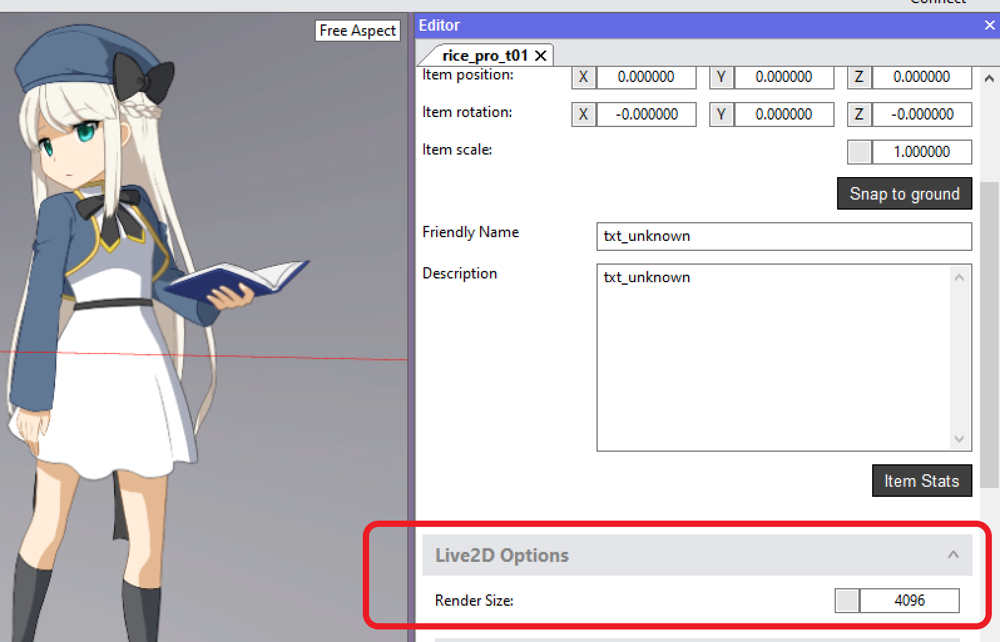
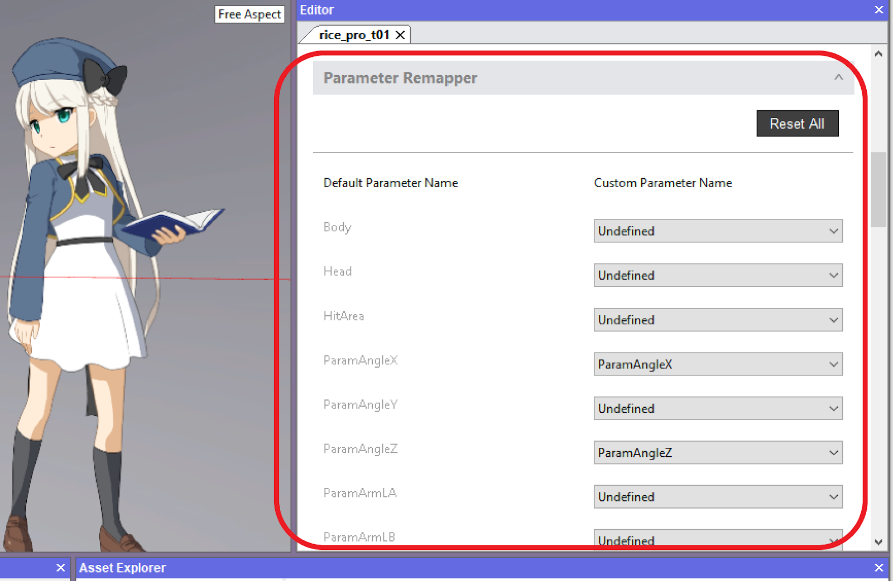

Debugging your Live2D avatar in the Animaze Editor
If you’ve imported your Live2D avatar into Animaze and you are encountering any of the following errors:
- Parts of the avatar are not responding to tracking input
- The avatar appears pixelated/blurry
Read the below steps to fix these issues and re-import your Live2D model using the Animaze Editor!
Step 1: Import Your Live2D Model in the Animaze Editor
To get started, download the free Animaze Editor from Steam. To do this, go to your Steam library, make sure the ‘tools’ box is checked from your library dropdown, then select and install Animaze Editor:

Open the Editor and Import your Live2D avatar. Follow the instructions at this link to import your Live2D avatar into the Editor.
Or follow these short instructions:
- Open the Editor, Click the “assets” menu and select “Import Live2D avatar”
- Select your model’s .JSON file and click Open
- Check all boxes in the import list to make sure all of your model files are being imported
- Dismiss the import log and view your avatar in the Editor’s Viewport
Step 2: Debug Your Live2D Model in the Animaze Editor
Fixing Blurriness by Increasing Render Size:
If your model looks Blurry, you need to change the Render Size.
First, click on the avatar’s name in the hierarchy panel on the left side of the screen to view the Avatar Inspector on the right. Scroll down and click the “Live2D Options” button. You will see an option called Render Size.

To increase the visual fidelity of your avatar, increase the Render Size number. Animaze supports a maximum render size of 16384 x 16384 px and a minimum of 64 x 64 px. Note that the Animaze PC app will by default display your Live2D model at the render size you set in the model files or in the Animaze Editor. You can also modify the resolution of your avatar within Animaze by changing the “2D Avatar Render Scale” setting in the Animaze PC App, but no setting will enable a render scale beyond 16384.
Step 3: Fixing Avatar Motions with Parameter Remapping:
Next, we will check to make sure your model’s parameters are mapped correctly. If parts of your avatar are not responding to tracking input in Animaze, you likely need to update your Parameter Mapping in the Editor.
If all of your Live2D Model’s Parameters are named according to Live2D’s standard Parameter names, Animaze should automatically import all of them. However, if you use custom parameter names in your model, you’ll need to map each custom parameter name to its corresponding default parameter name. This will make sure Animaze knows how to animate your model in response to tracking input.
In the avatar inspector panel on the right, scroll down to “Parameter Remapper” and click on it to expand the tool.

You will see a list of every Default Parameter supported by Animaze under “Default Parameter Name.” Make sure each of these parameters is matched to the correct custom parameter name for your avatar. If a parameter is undefined, it will not be recognized by Animaze, and will be unaffected by tracking input.
Go through the parameter list and make sure all of the parameters your model uses are mapped correctly.
Congratulations! Now that you’ve fixed your avatar, you’re ready to save your changes and export your .avatar bundle from the Editor.
Step 4: Export your Live2D Model as a .avatar file
Follow steps 1-4 of this guide “Create the Avatar Bundle”: https://www.animaze.us/manual/gettingstarted2d/importtowindows
Note: The name of .avatar file has to be the same as your model3.json file or you will get flagged as a new import. The Editor automatically assigns this filename to your .avatar file - just don’t change it.
Step 5: Import your Updated .avatar into Animaze
Follow Steps 1-4 here under “import the avatar bundle” https://www.animaze.us/manual/gettingstarted2d/importtowindows
Note: if you are not an Animaze subscriber and you have already paid for a direct Live2D import, you will not have to pay again for this import. Just make sure your .avatar filename is the same as your model3.json filename.